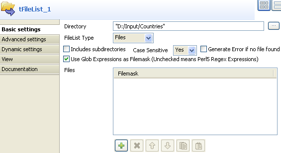

Scenario: Iterate on files and merge the content
The following job iterates on a list of files then merges their content and diplays the final 2-column content on the console.

- Click and drop the following components onto the design workspace: tFileList, tFileInputDelimited, tUnite and tLogRow.
- Connect the tFileList to the tFileInputDelimited using an iterate connection and connect the other component using a row main link.
- In the tFileList Properties view, browse to the directory, where the files to merge are stored.
- As Filemask, type in
*.txtas all files to be merged are of this type. - The Case Sensitive box is checked by default. No need to uncheck it.
- The files are pretty basic and contain a list of countries and their respective score.
- Select the tFileInputdelimited component, and display this component's Properties view.
- In this use case, the input files' connection properties are not centrally stored in the Repository, therefore select Built-In as Property type and set every single field manually.
- To fill in the File Name field, use the Ctrl+Space bar combination to access the variable completion list. To process all files from the directory defined in the tFileList, select
$_globals{tFileList_1}{CURRENT_FILEPATH}on the global variable list (in Perl). - Keep the default setting for the Row and Field separators as well as the other fields.
- Click the Edit Schema button and set manually the 2-column schema to reflect the input files' content.
- For this example, the 2 columns are Country and Points .They are both nullable.
- Click OK to validate the setting and accept to propagate the schema throughout the job.
- Then select the tUnite component and display the Properties view. Notice that the output schema strictly reflects the input schema and is read-only.
- In the tLogRow Properties view, check the Print values in cells of the table box to display properly the output values.
- Save the job and execute it.



The console shows the data from the various files, merged into one single table. This uniformized output can then be aggregated to set